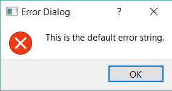

h = errordlg()
h = errordlg(text_error)
h = errordlg(text_error, title)
h = errordlg(text_error, title, mode)
| Paramètre | Description |
|---|---|
| text_error | a string ou cellule de chaînes : message d'erreur. |
| title | a string : titre de la boîte de dialogue. |
| mode | a string : 'modal', 'non-modal', 'replace'. |
| Paramètre | Description |
|---|---|
| h | un handle QObject. |
errordlg crée une boîte de dialogue d'erreur.
h = errordlg(text_error, title, 'replace') indique si une boîte de dialogue existante portant le même titre doit être remplacée.

h = errordlg()h = errordlg('error string')h = errordlg('error string', 'dialog title')h = errordlg('error string', 'dialog title')
h = errordlg('error string', 'dialog title', 'on')| Version | Description |
|---|---|
| 1.0.0 | version initiale |